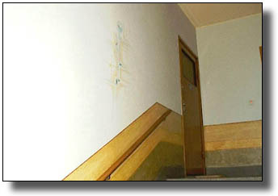

Fastigheten
Huset är ritat i funkisstil av lundaarkitekten Hans Westman och byggdes 1939 av Nils "Tatis" Andersson. Byggnaden klassas av kommunens bevarandekommitté som kulturhistoriskt värdefull, vilket gör det extra viktigt för föreningen att värna om funkisstilen. Trapphusen pryds av unika och mycket fina målade geometriska ornament och dessutom är dörrarna ådringsmålade.
Renoveringar
Under de senaste åren har omfattande renoveringar gjorts av fastigheten. Bland de mindre synliga jobben kan nämnas fjärrvärmeanslutning 1988, renovering och Schädlerbehandling av spiskanalerna 1992, samt byte av vatten- och avloppsledningar.
Den stora renoveringen av tak, fasader och balkonger skedde 1993.
Trädgården designades av trädgårdsarkitekten Christina Ilminge och cykelskjul och staket byggdes 1994.
1997 och 1998 gjordes el och telefonomläggning, samtidigt passade vi på att dra datornätverk i huset. Vi förbättrade även säkerheten genom att installera lås av typen "KABA Titan" i hela fastigheten.
2010 bytes ut samtliga lägenhetsdörrar i fastigheten mot säkerhetsdörrar (Daloc). Vi passade även på att byta ut brevinkasten mot postboxar.
2013 installerades en ny fjärrvärmecentral.

- Norbergsgatan 5
- 22354 Lund
- styrelsen@sydgarden.m.se